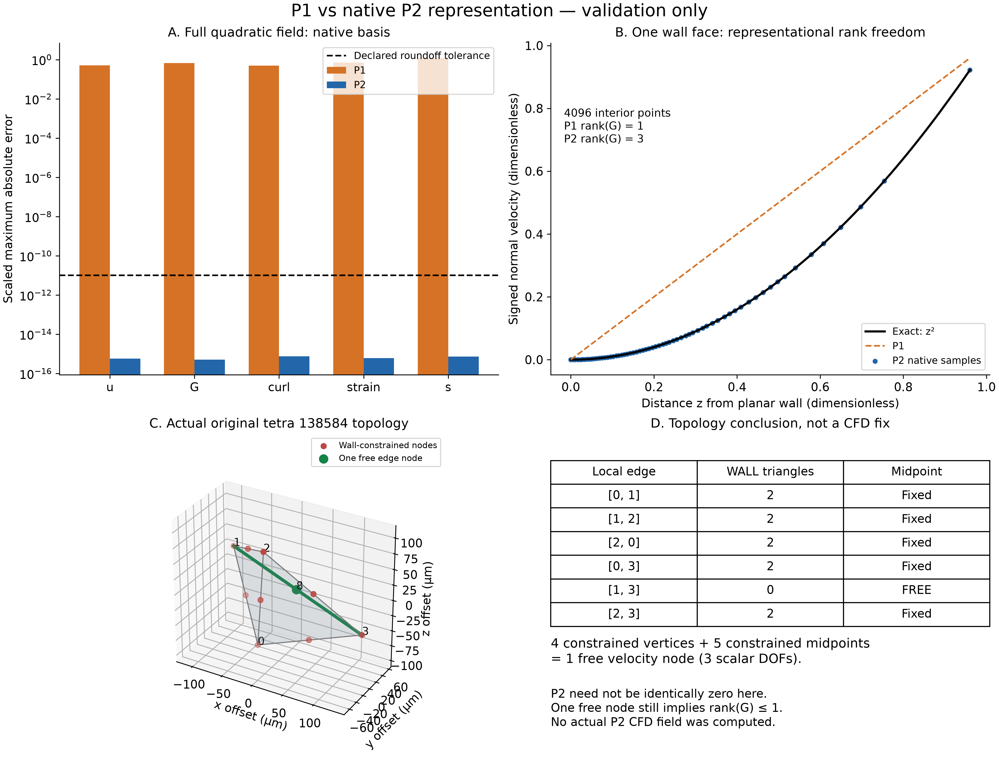
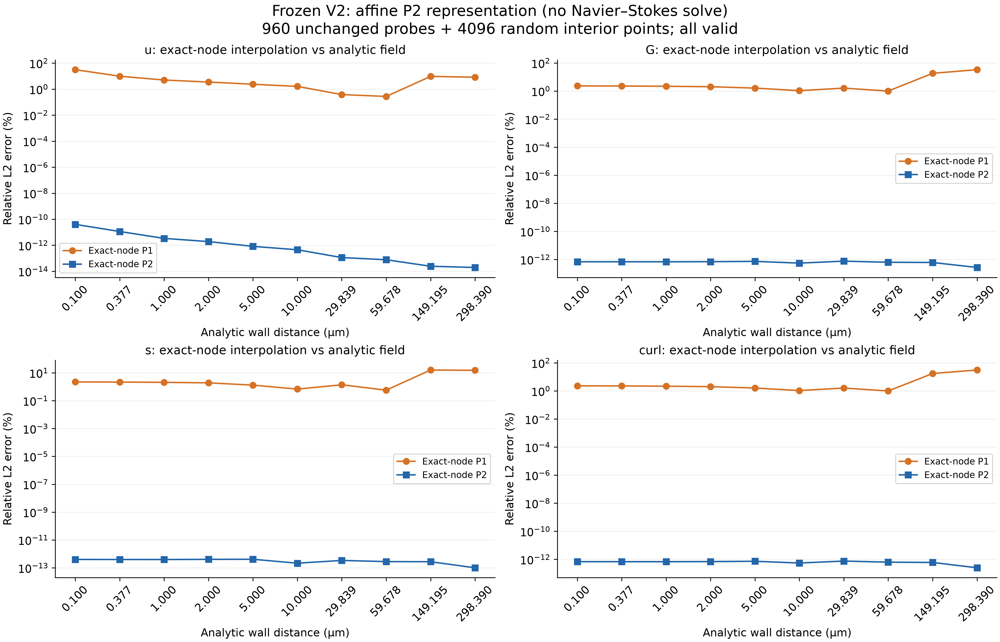
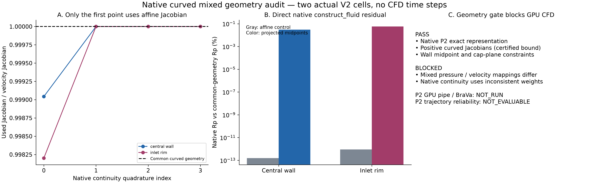

原生 P2/P1：表示通过，曲面装配阻断
NOT_EVALUABLE：A/B/C/D1通过；实际native曲面mixed assembly不一致，按门槛停止。新增CFD和粒子轨迹均为0。
完整中文报告 · 原生路径审计 · 决策门 · 58项工程检查 · 执行记录

图1：P2精确复现二次场。138584只有1个自由速度节点，可解除强制全零，但G仍受rank≤1限制；不是实际CFD结果。边表CSV。

图2：原960探针保持，误差纵轴用log展示舍入到百分数量级差异；0.1µm仅诊断。解析节点插值不等于施加no-slip后的CFD。CSV。

图3：直接捕获production construct_fluid的单元残差。第一个连续性积分点使用affine Jacobian，其余使用curved Jacobian。该缺陷阻断CFD，不等于测出了P2 CFD场误差。CSV。
原始数据：表示fixtures · Poiseuille全部采样 · 原生曲面逐点数据。无平滑、无域外结果删除、无自动下一任务。